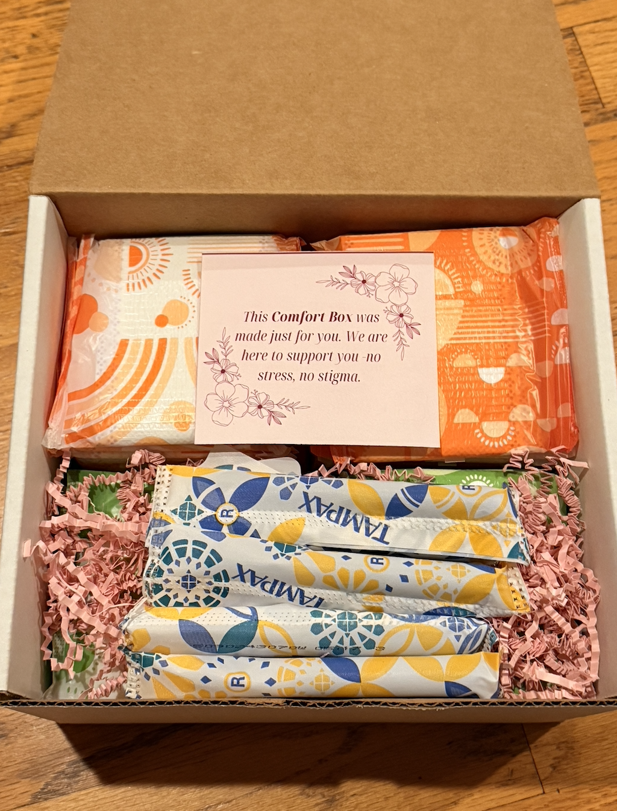

Sign up
Scan a QR code or use a link to choose preferred products and quantities.
Comfort Box Program
Students select the menstrual products they need. Pads for Peers prepares personalized Comfort Boxes and delivers them through partner schools, with privacy and choice at the center.

How it works
Students choose what works for them. We coordinate the box and monthly delivery with the school.
Scan a QR code or use a link to choose preferred products and quantities.
We pack a personalized Comfort Box with the products selected.
The box arrives at a designated location at school.
A confidential QR code helps students pick up their box without names displayed.
Designed around students
Support is offered through a place students already know.
Students select products that fit their individual needs.
Discreet enrollment and pickup help protect confidentiality.
Monthly boxes make support consistent and predictable.
Built for the school day
Comfort Boxes are intended to make products available through a familiar school location, with a predictable pickup process and less stigma around asking for help.
See how schools partnerTake the next step
We work with school staff to explain the program, answer questions, and plan a manageable setup.